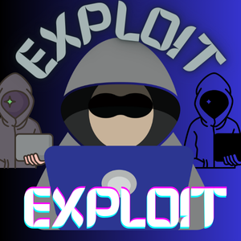

In this post i will be talking about what cybersecurity is, why it is important and some key concepts in the cyberspace. This post is for all those who want to enter the cyberworld, it is for noobies in tech, and also for those who love to learn.
So now, the question: What is Cybersecurity?
Cybersecurity can be defined as (sorry am not starting this as a lecture, so we are going to make it fun and simple) Cybersecurity is ... Ok ok wait a minute before I continue there is a warning: "As you learn further you will find out that you are in a battle between you and cybercriminal, i mean you are going to be the ethical one here, right? I hope you don't turn to the evil side.
But you need to know anyone can be a victim to cyber attack including you even i too, no matter how small or great, unpopular or popular you are. But there are tons of ways to reduce the chances of that. So on this path i will be helping you to become a Ethical Cybersecurity Ninja. So now back to "What is Cybersecurity", to make it plain and simple as there is no general meaning, Cybersecurity is the battle between us and cyber criminals, it involves the methods and steps taken in keeping our selves and our data safe from criminals.
So with that said, Why is Cybersecurity so important?
Like i have said, we are in a battle between us and cybercriminal, we need to learn how to keep ourselves, our data and even others safe in the cyberworld.
.jpg) Image by kjpargeter on Freepik
Image by kjpargeter on Freepik
As almost everything, every business is starting to use the internet for daily activities so is the risk of attacks also increasing. So it is really, i mean it, it is really important to keep ourselves safe. Almost every thing is going to the cloud. Basics in Cybersecurity needs to be known by us, our parents, our grandparents, even children. We are all to keep our selves safe out there cause it is a really dangerous world out there, but with God's help we will overcome. Now we can't be unhackable or immune to cyber attacks but we can drastically reduce the risk of cyber attacks targeted at us.
So now, let's talk about some Terms in Cybersecurity
A lot of terms are used in cybersecurity especially when referring to an attacks or something of sort, therefore we all need to learn these terms:
-
Malware:
Malware means Malicious Software, yes, it is referred to categories of software that can cause harm to your system, there are various bad things these softwares can do to a system.

Malware are classified into various categories like:
- Spyware: This malware which when installed (as the name says) spies on you, it can gather your personal informations, without you giving it permissions.
- Ransomware: This is a malware that encrypt or restrict victim access to their computer system until a ransom is paid. They usually use vulnerability in the system or any software to gain access and then encrypt your files
- Trojan: This is a software that is disguised as a piece of harmless and sometimes even desirable software, but the truth is they perform malicious act. Malwarebytes also have this to say about the origin of the name "Beware of Greeks bearing gifts: In Virgil’s epic poem, The Aeneid, a clever Greek war strategist named Odysseus devises a plan to get his men inside the walled city of Troy. Instead of destroying or climbing the city’s walls, Odysseus sees another way in: with deception. Trojan soldiers watch as the Greeks appear to sail away, leaving behind a giant wooden horse as a token of surrender. Drunk on victory, the Trojans bring the horse inside their walls, only to discover Odysseus and his men were hidden inside the whole time." So Trojan just act legitmate but contain dangerous things that can harm your system. We also have RAT (Remote Access Trojan), this type of trojan gives the bad guy remote access and control of your PC or phone. So he or she is able to access important files and stuff.
-
Virus: A virus, specifically, is a type of malware
that replicates itself by attaching to other programs or files
on a computer. Viruses can cause a range of problems, including:
- Deleting or corrupting files
- Crashing or freezing the computer
- Stealing personal information
- Spreading to other computers
- Displaying unwanted ads or messages
-
Worms: Imagine your computer is a house, and a
worm is like a unwanted visitor who enters your house without
permission. Once inside, the worm:
- Makes copies of itself
- Moves around your house (computer) and causes trouble
- Can even invite other unwanted visitors (like viruses or malware)
- Can steal or damage your belongings like your files or data
- Cyber Attacks: Yeah i know, i know, we've mentioned this several times, so what does this mean, Cyber Attacks are really offensive actions taken or carried out by cybercriminal who could do things like install malware on your device, perform some social engineering tricks on you (We will talk about this next)
-
Social Engineering: Social engineering is the use of psychological manipulation to
fool someone into disclosing personal or sensitive information, or
into taking activities that could jeopardize security or privacy. It
is a sort of cybercrime that targets human behavior rather than
technological flaws.
Social engineers utilize a variety of strategies to control their
victims, including:
- Phishing: Fraudulent emails, texts, or communications that look to be from a reputable source and attempt to deceive people into disclosing critical information.
- Pretexting: Creating a fake scenario or story to earn an individual's trust and collect confidential information.
- Whaling: This is the use of sophisticated social engineering attacks to target high-level executives or officials.
- Vishing: Using phone calls to deceive people into disclosing critical information.
- Smishing: The practice of deceiving someone into disclosing private information via SMS or text messages.
- Logic Bomb: This is a malicious code that is usually placed in a program and will blow up (execute) when a certain condition is met or an action is carried out.
-
Vulnerabilities: Vulnerabilities refer to weaknesses
or flaws in a system, network, or application that can be exploited
by attackers to gain unauthorized access, control, or data.
 Image by jcomp on Freepik
Image by jcomp on Freepik
These weaknesses can exist in various areas, including:- Software: Bugs, outdated versions, or unpatched flaws in operating systems, applications, or plugins.
- Hardware: Flaws in device design, manufacturing, or configuration.
- Network: Misconfigured settings, unsecured protocols, or inadequate segmentation.
- Human factor: Weak passwords, phishing, social engineering, or inadequate training.
- Configuration: Insecure settings, misconfigured firewalls, or poorly managed access controls.
-
Exploit: An exploit is a technique or tool used to
take advantage of a vulnerability or weakness in a system, network,
or application to gain unauthorized access, control, or data.

Created by Me
Exploits can be used to:- Bypass security controls or authentication mechanisms
- Execute malicious code or commands
- Extract sensitive data or information
- Gain elevated privileges or control
- Disrupt or shut down systems or services
- Remote exploits: Attackers use a remote connection to exploit a vulnerability.
- Local exploits: Attackers have physical access to the system or network.
- Client-side exploits: Attackers target vulnerabilities in client-side applications or software.
- Server-side exploits: Attackers target vulnerabilities in server-side applications or software.
- Zero-day exploits: Attackers use previously unknown vulnerabilities before a patch or fix is available.
So that is enough on Malware, yeah malware is really long and interesting to know and understand. But let's move to the next term.
All right so we are going to stop here for today, hope you enjoyed it and had fun, feel free to hit me on LinkedIn, Instagram, Twitter. And don't forget to watch my channel videos on Youtube and watch out for more contents. Till then, be safe.